Chapter 3 단순선형회귀분석
- 회귀분석의 가장 간단한 형태는 한 개의 설명변수와 한 개의 반응변수 간의 관계식을 찾는 문제이며, 이를 단순회귀분석(simple regression analysis)라고 함
3.1 산점도
- \(n\)개의 개체에 대해 이변량 데이터 \((X_1,Y_1), (X_2, Y_2), \cdots, (X_n,Y_n)\)를 관측한 경우, 각 개체에 대한 관측값은 2차원 공간에서 한점으로 표시될 수 있음
- 이러한 그래프를 산점도(scatter plot 또는 scatter diagram)라 함
- Scatter plot with father- and son-height
# install.packages("UsingR")
library(UsingR)
plot(father.son)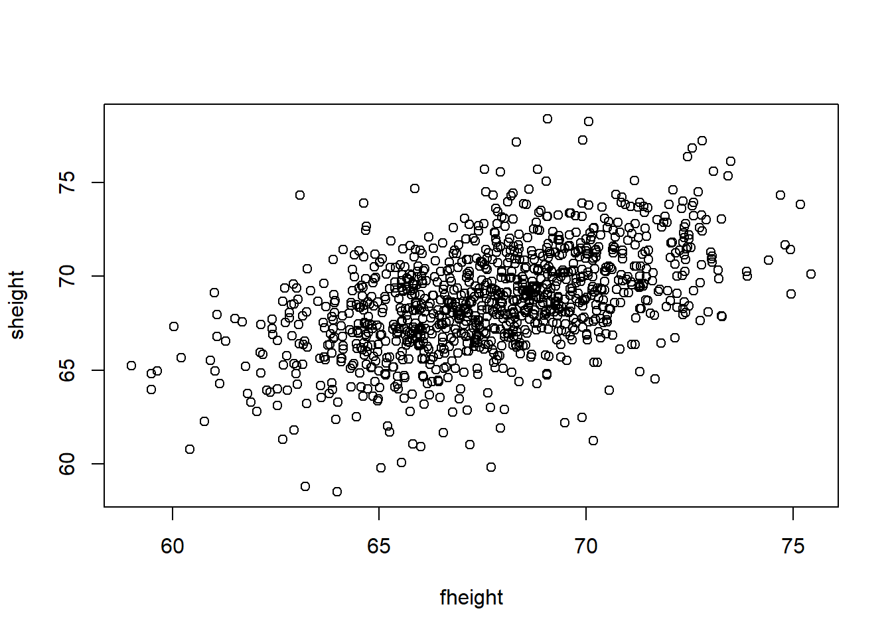
만약 산점도에서 두 변수 간의 관계가 선형으로 보인다면 단순선형회귀분석을 통해 적합한 함수식을 구할 수 있음
수학적으로, 1차 직선 \(y=\beta_0+\beta_1x\)에서 \(\beta_0\)는 절편, \(\beta_1\)은 기울기를 나타냄
- 기울기 \(\beta_1\)이 양수이면 \(x\)가 증가할 때 \(y\)도 증가하며, \(\beta_1\)이 음수이면 \(x\)가 증가할 때 \(y\)는 감소하는 관계를 나타냄
- 실제 데이터에서는 완벽한 직선식으로 표현하는 것이 불가능하므로 오차항을 포함하는 통계적 모형을 통해 적절한 관계식을 구해야 함
회귀분석은 산점도를 통한 변수간의 관계를 살펴보는 것으로부터 시작함
Example: 차량의 속도(speed)와 정차거리(stopping distance)
head(cars, 10)## speed dist
## 1 4 2
## 2 4 10
## 3 7 4
## 4 7 22
## 5 8 16
## 6 9 10
## 7 10 18
## 8 10 26
## 9 10 34
## 10 11 17plot(cars)
- Trend
plot(cars)
abline(lm(dist~speed, data=cars), col="red")
lines(cars$speed,predict(lm(dist~speed+I(speed^2), data=cars)), col="blue")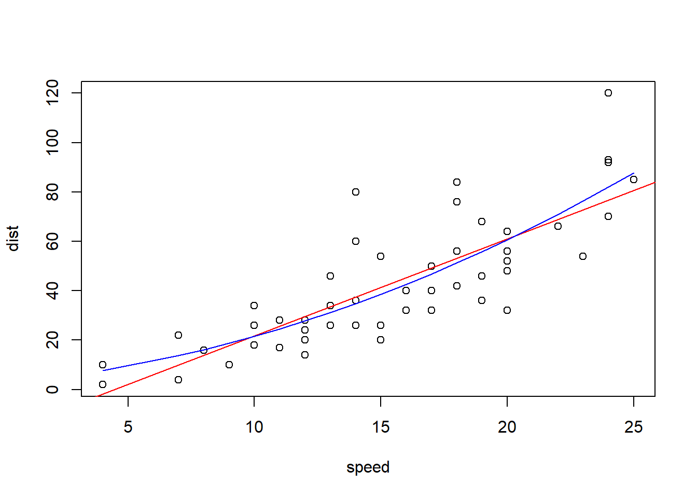
3.2 상관분석
3.2.1 표본상관계수
- 두 변수 간의 연관성(association)은 두 개의 연속형 변수 간의 상관계수(correlation coefficient)를 구하여 추정할 수 있음
- 여기서 상관계수는 상관성(correlation)의 크기를 나타내며, 상관성은 선형성(linearity)을 의미함
- 두 변수간 연관성의 방향(direction)과 강도(strength)를 측정
- 두 확률변수 \(X\)와 \(Y\)의 상관계수 \(\rho\)는
- 분산(variance): \(Var(X)=E(X-\mu_X)^2\), \(Var(Y)=E(Y-\mu_Y)^2\)
- 공분산(covariance): \(Cov(X,Y)=E(X-\mu_X)(Y-\mu_Y)\)
\[ \rho=cor(X,Y)=\frac{Cov(X,Y)}{\sqrt{Var(X)Var(Y)}} \]
- 두 확률변수 \(X\)와 \(Y\)의 관측값 \((X_1,Y_1), (X_2, Y_2), \cdots, (X_n,Y_n)\)를 관측한 경우 산점도는 다음과 같이 \((\bar{X}, \bar{Y})\)를 기준으로 4분할 됨
# install.packages("UsingR")
library(UsingR)
plot(father.son, xlab="X", ylab="Y")
library(DescTools)
DrawEllipse(mean(father.son$fheight),mean(father.son$sheight),radius.x=9,radius.y=3.5,rot=10.3,border="red", lwd=1.5)
par(new=T)
plot(father.son, xlab="X", ylab="Y")
abline(v=mean(father.son$fheight), lty=2, col="red")
abline(h=mean(father.son$sheight), lty=2, col="red")
points(mean(father.son$fheight),mean(father.son$sheight), cex=2, col="red", pch=19)
- \(\bar{X}\), \(\bar{Y}\), \(\hat{Cov}(X,Y)\)를 각각 \(X\)와 \(Y\)의 표본평균, 표본공분산이라고 하면
\[ \bar{X}=\frac{1}{n}\sum_{i=1}^n X_i, \,\,\, \bar{Y}=\frac{1}{n}\sum_{i=1}^n Y_i, \,\,\, \hat{Cov}(X,Y)=\frac{1}{n-1}\sum_{i=1}^n (X_i-\bar{X})(Y_i-\bar{Y}) \]
- 공분산의 부호는 \(X\)와 \(Y\) 사이의 선형관계에 대한 방향을 나타냄
- \(\hat{Cov}(X,Y)>0\)이면, \(X\)와 \(Y\) 사이의 양의 선형관계
- \(\hat{Cov}(X,Y)<0\)이면, \(X\)와 \(Y\) 사이의 음의 선형관계
- 공분산은 선형관계의 강도(strength)가 얼마나 되는지 알기 어려움
- 측정단위의 변화에 영향을 받음
- 예: 동일한 자료에서 원 단위 대신 천원 단위를 사용하면 공분산 값이 달라짐
- 공분산에서 단위에 따른 변화를 제거하기 위해 공분산을 계산하기 전에 데이터를 표준화(standardization) 할 수 있음
- 각 관측값에서 평균을 빼고 표준편차로 나눔
- \(X\)의 표본분산과 표준편차: \(S_X^2=\frac{1}{n-1}\sum_{i=1}^n(X_i-\bar{X})^2\), \(S_X=\sqrt{S_X^2}\)
- \(Y\)의 표본분산과 표준편차: \(S_Y^2=\frac{1}{n-1}\sum_{i=1}^n(Y_i-\bar{Y})^2\), \(S_X=\sqrt{S_Y^2}\)
\[ Z_X=\frac{X_i-\bar{X}}{S_X}, \,\,\, Z_Y=\frac{Y_i-\bar{Y}}{S_Y} \]
표준화된 \(Z\)는 평균이 0이고 표준편차가 1이 됨
표준화된 \(Z_X\)와 \(Z_Y\)의 공분산을 상관계수(correlation coefficient)라 함
\[ \hat{Cov}(Z_X,Z_Y)=\hat{Cor}(Z_X,Z_Y)=\frac{1}{n-1}\sum_{i=1}^n Z_{Xi}Z_{Yi}=\frac{1}{n-1}\sum_{i=1}^n(\frac{X_i-\bar{X}}{S_X})(\frac{Y_i-\bar{Y}}{S_Y}) \]
- 피어슨 상관계수(Pearson correlation coefficient) \(r\)은 상관계수에 대한 추정량으로 표본상관계수라 하며 다음과 같이 정의함
\[ \begin{align} r=\hat{Cor}(X,Y)=\frac{\hat{Cov}(X,Y)}{S_XS_Y}&=\frac{1}{n-1}\sum_{i=1}^n(\frac{X_i-\bar{X}}{S_X})(\frac{Y_i-\bar{Y}}{S_Y})\\ &=\frac{\sum_{i=1}^n(X_i-\bar{X})(Y_i-\bar{Y})}{\sqrt{\sum_{i=1}^n(X_i-\bar{X})^2\sum_{i=1}^n(Y_i-\bar{Y})^2}} \end{align} \]
- 상관계수의 범위
\[ -1 \le \rho (r) \le 1 \]
- 상관성의 강도
- 상관계수값이 0에 가까울수록 상관성이 없음
- 1에 가까울수록 강한 양의 선형 관계
- -1에 가까울수록 강한 음의 선형 관계
- 상관계수 \(\rho=0.9\)
rho <- 0.9
x <- rnorm(100,0,1)
y <- rnorm(100,rho*x, sqrt(1-rho^2))
plot(x,y)
abline(lm(y~x))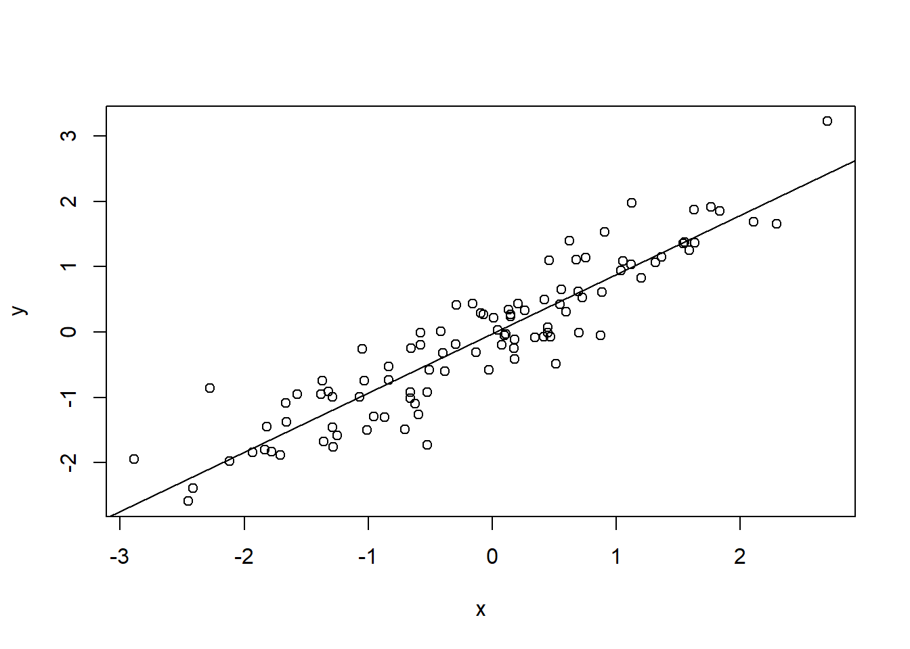
- 상관계수 \(\rho=-0.9\)
rho <- -0.9
x <- rnorm(100,0,1)
y <- rnorm(100,rho*x, sqrt(1-rho^2))
plot(x,y)
abline(lm(y~x))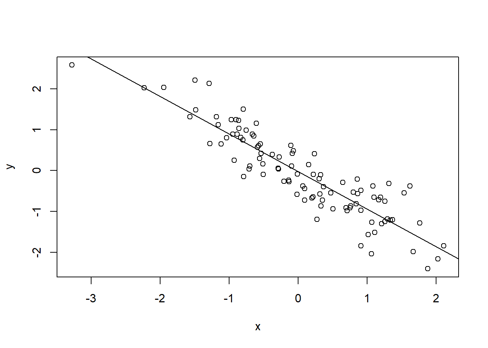
- 상관계수 \(\rho=-0.1\)
rho <- -0.1
x <- rnorm(100,0,1)
y <- rnorm(100,rho*x, sqrt(1-rho^2))
plot(x,y)
abline(lm(y~x))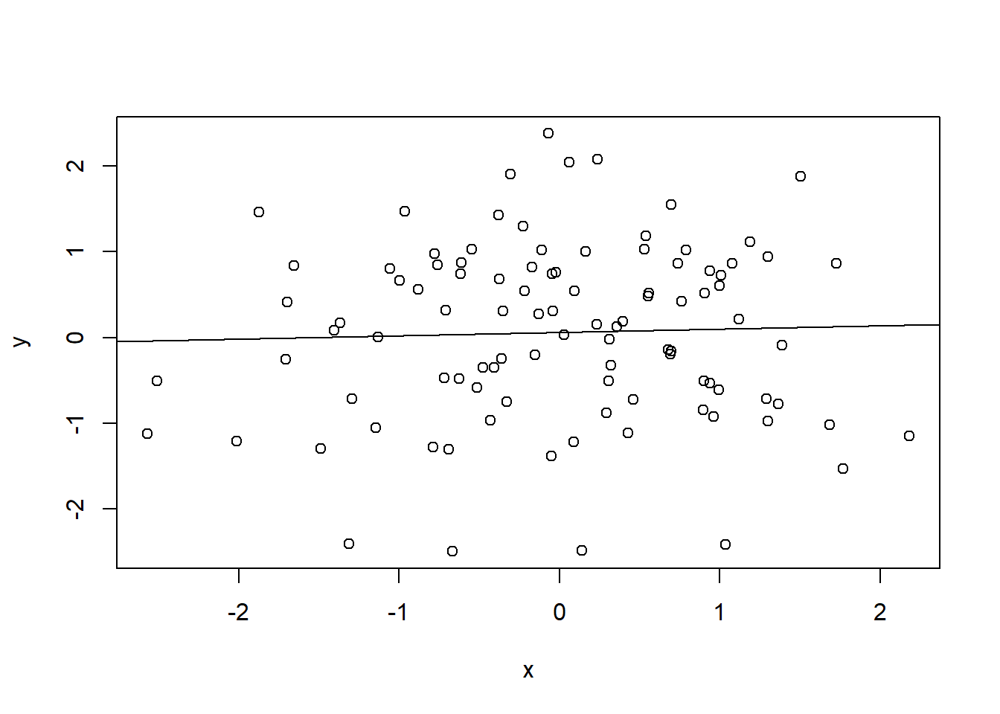
- \(Y=X^2\)인 경우
x <- rnorm(100,0,1)
y <- x^2
plot(x,y)
curve(x^2, add=T)
cor(x,y)## [1] 0.01231821- 상관계수는 오직 선형(linear)관계를 측정함
- 비선형적으로 연관이 있을 때에도 상관계수는 0이 될 수 있음
3.2.2 상관분석
- 두 변수 간의 상관관계에 대한 통계적 가설검정을 상관분석(correlation analysis)이라함
- 귀무가설을 기각할 수 없는 경우 상관계수를 0으로 받아들임
- 통계적 가설
- \(H_0: \rho=0\) (두 변수 간의 상관계수가 0이다)
- \(H_1: \rho\ne 0\) (두 변수 간의 상관계수가 0이 아니다)
- 이변량 데이터 \(n\)개 쌍의 상관성에 대한 검저은 피어슨 상관계수 \(r\)을 이용함
- 검정통계량
\[ T=\frac{r\sqrt{n-2}}{\sqrt{1-r^2}} \sim t_{n-2} \]
- 유의수준 \(\alpha\) 검정
\[ |T| \ge t_{n-2}(\alpha/2) \ \text{ then reject null hypothesis} \]
data(cars)
head(cars)## speed dist
## 1 4 2
## 2 4 10
## 3 7 4
## 4 7 22
## 5 8 16
## 6 9 10attach(cars)
cor(speed, dist)## [1] 0.8068949cor.test(speed, dist)##
## Pearson's product-moment correlation
##
## data: speed and dist
## t = 9.464, df = 48, p-value = 1.49e-12
## alternative hypothesis: true correlation is not equal to 0
## 95 percent confidence interval:
## 0.6816422 0.8862036
## sample estimates:
## cor
## 0.8068949- 결과를 살펴보면 표본상관계수는 0.8069로 양의 상관성이 매우 강한 편이고, 상관성에 대한 검정결과 p-value는 \(1.49\times 10^{-12}<0.05\)로 유의수준 \(5\%\)에서 귀무가설 \(H_0\)를 기각함
- 즉, 속도와 거리 간의 상관관계가 통계적으로 매우 유의함
3.2.3 표본상관계수 해석시 유의점
set.seed(1)
gibbs<-function(a,b, rho, n){
theta1 <- matrix(NA,n,1)
theta2 <- matrix(NA,n,1)
theta1[1]<-a
theta2[1]<-b
for(i in 2:n){
theta1[i] <- rho*theta2[i-1] + sqrt(1-rho^2)*rnorm(1)
theta2[i] <- rho*theta1[i] + sqrt(1-rho^2)*rnorm(1)
}
cbind(theta1,theta2)
}
gdata<-gibbs(0,0,0.05,100)
x<-as.data.frame(gdata)
head(x)## V1 V2
## 1 0.0000000 0.0000000
## 2 -0.6256703 0.1521301
## 3 -0.8269769 1.5519366
## 4 0.4066925 -0.7991075
## 5 0.4468640 0.7597444
## 6 0.6130484 -0.2743540plot(x$V1, x$V2)
abline(lm(x$V2~x$V1))
text(-1.5,2,paste("r=",round(cor(x$V1, x$V2),4),sep=""),cex=1.5)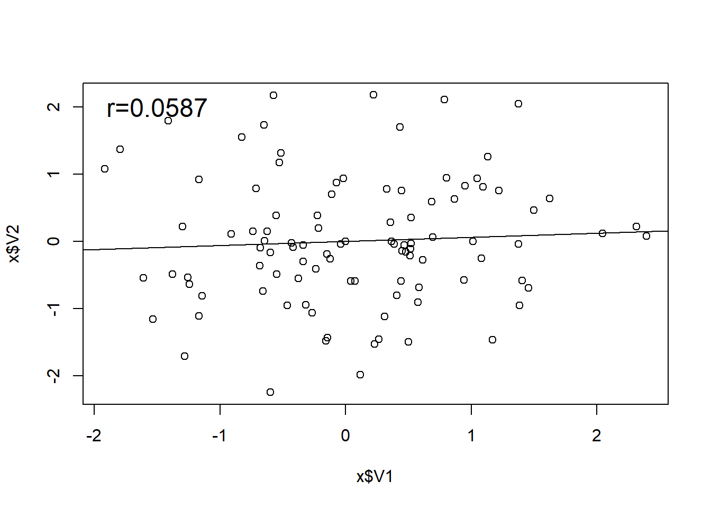
x <- seq(-1,1,by=0.01)
y <- x^2
plot(x,y)
abline(lm(y~x))
text(0,1,paste("r=",round(cor(x, y),4),sep=""),cex=1.5)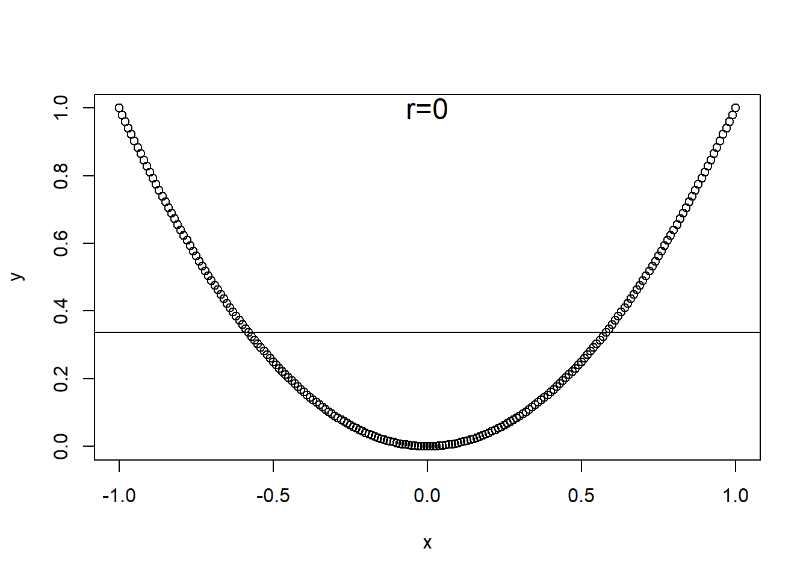
두 경우 모두 표본상관계수는 0에 가깝지만 첫번째 그림은 선형관계가 거의 없는 편임
두번째 그림은 곡선 관계가 매우 감함에도 불구하고 표본상관계수는 0임
즉, 표본상관계수 \(r\)은 직선에 대한 연관성 측도이지, 직선이 아닌 다른 연관성에 대한 측도가 아님
3.3 단순선형회귀모형
- 한 개의 설명변수(독립변수) \(X\)와 한 개의 반응변수(종속변수) \(Y\) 간의 일차 선형모형(linear model)
\[ Y=\beta_0 + \beta_1X \]
- 이변량 관측벡터 \((X_1, Y_1), (X_2,Y_2), \ldots, (X_n,Y_n)\)에 대해 단순선형회귀모형(simple lineare regression model)은
\[ Y_i=\beta_0+\beta_1X_i+\epsilon_i, \,\,\, i=1,2,\ldots, n \]
회귀모수(regression parameter)
- 절편(intercept): \(\beta_0\)
- 기울기(slope): \(\beta_1\)
오차항(error term) 가정: \(\epsilon_i \sim N(0,\sigma^2)\)
단순선형회귀모형을 벡터와 행렬을 이용해 표현하면,
\[ \mathbf{Y}=\mathbf{X}\beta+\mathbf{\epsilon} \]
- 여기서 \(\mathbf{Y}\)와 \(\epsilon\)은 \(n\times1\)벡터, \(x_i\)와 \(\beta\)는 \(2\times1\) 벡터이고 \(\mathbf{X}\)는 \(n\times2\) 행렬
\[ \mathbf{Y}=\begin{pmatrix}Y_1\\Y_2\\\vdots\\ Y_n \end{pmatrix}, \,\,\, x_i=\begin{pmatrix}1 \\ X_i \end{pmatrix}, \,\,\, \mathbf{X}=\begin{pmatrix}x_1' \\ \vdots \\x_n' \end{pmatrix}=\begin{pmatrix}1 & X_1 \\ \vdots &\vdots \\1 & X_n \end{pmatrix}, \,\,\, \beta=\begin{pmatrix} \beta_0 \\ \beta_1 \end{pmatrix}, \,\,\, \epsilon=\begin{pmatrix} \epsilon_1 \\ \epsilon_2 \\ \vdots \\ \epsilon_n \end{pmatrix} \]
- 회귀모형에서 \(X_i\)들은 값이 주어진 상수라고 가정하며, 오차항 \(\epsilon_i\)의 평균이 \(0\)이라는 가정에 의하여 다음과 같이 표현 가능하다.
\[ E(Y_i)=\beta_0+\beta_1X_i \]
- 즉, 선형회귀식은 \(Y\)의 기대값을 \(X\)의 함수로 나타낸 것으로 볼 수 있으며, \(Y\)의 평균값이 \(X\) 값에 의존한다는 것을 강조하기 위해 다음과 같이 표현함
\[ E(Y_i|X_i)=\beta_0+\beta_1X_i \]
x <- 0:8
y <- 2*x+1
x1 <- dnorm(seq(-3,3,length=100),0,0.9)
plot(x,y, type="l", ylim=c(0,16), xlim=c(0,8), xlab="X", ylab="Y")
segments(2,3,2,8, lty=2, col="blue")
lines(x1+2,seq(3,8,length=100),col="blue")
segments(4,6,4,12, lty=2, col="blue")
lines(x1+4,seq(6,12,length=100),col="blue")
segments(6,10,6,15, lty=2, col="blue")
lines(x1+6,seq(10,15,length=100),col="blue")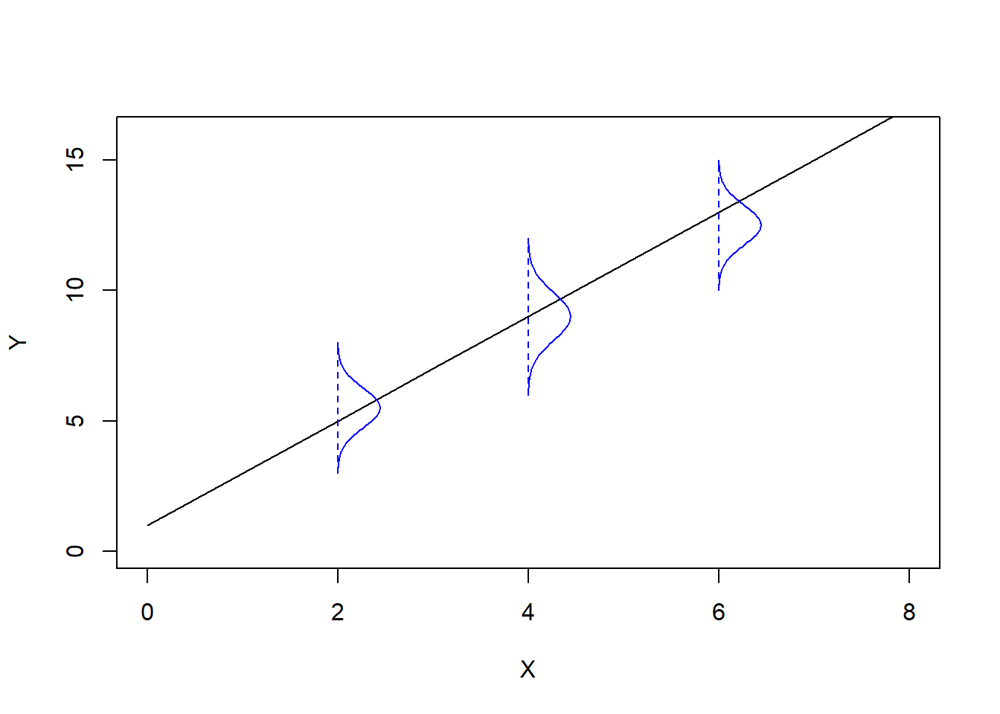
\(X\)의 값에 따라 평균은 달라지지만 분산이 같으므로 각 점에서의 분포모양은 동일함
기울기 \(\beta_1\)은 설명변수 \(X\)가 한 단위 증가할 때 움직이는 \(Y\)의 평균값의 변화량이라고 해석할 수 있음
3.4 모수 추정
분석하고자 하는 회귀모형을 결정한 후에는 모형에 포함된 모수를 추정해야 함
모수 추정량
- 오차제곱합을 최소로 하는 최소제곱추정량
- 가능도함수를 최대로 하는 최대가능도추정량
3.4.1 최소제곱법을 이용한 모수 추정
최소제곱법(least squares method)은 표본 데이터로부터 회귀계수를 추정하는 방법 중 가장 널리 이용되는 방법으로 오차제곱합을 최소화 하는 방법으로 회귀계수 추정
오차제곱합
adv <- read.csv(file = "https://www.statlearning.com/s/Advertising.csv")
fit <- lm(sales ~ TV, data = adv)
plot(x = adv$TV, y = adv$sales, pch = 20, xlab = "TV budget (1,000USD)",
ylab = "Sales (1,000 units)", col = "steel blue") # scatter plot
abline(fit, col = "dark gray", lwd = 3) # fitted OLS regression line
## deviations from the observed values
segments(x0 = adv$TV, y0 = predict(fit), x1 = adv$TV, y1 = adv$sales, col = "light gray")
\[ S=S(\beta_0, \beta_1)=\sum_{i=1}^n \epsilon_i^2=\sum_{i=1}^n (Y_i-\beta_0 -\beta_1X_i )^2 \]
최소제곱추정량(least squares estimator)
\[ \hat{\beta}_1=\frac{S_{XY}}{S_{XX}}=\frac{\sum_{i=1}^n(X_i-\bar{X})(Y_i-\bar{Y})}{\sum_{i=1}^n(X_i-\bar{X})^2}=\frac{\sum_{i=1}^nX_iY_i-n\bar{X}\bar{Y}}{\sum_{i=1}^nX_i^2-n\bar{X}^2} \]
\[ \hat{\beta}_0=\bar{Y}-\hat{\beta}_1\bar{X} \]
여기서
\[ \bar{X}=\frac{1}{n}\sum_{i=1}^n X_i, \,\,\, \bar{Y}=\frac{1}{n}\sum_{i=1}^nY_i \]
- \(X\)의 수정제곱합(corrected sum of squares)
\[ S_{XX}=\sum_{i=1}^n(X_i-\bar{X})^2 \]
- \(Y\)의 수정제곱합
\[ S_{YY}=\sum_{i=1}^n(Y_i-\bar{Y})^2 \]
- \(X\)와 \(Y\)의 교차곱
\[ S_{XY}=\sum_{i=1}^n(X_i-\bar{X})(Y_i-\bar{Y}) \]
증명
오차제곱 합 \[ S=S(\beta_0, \beta_1)=\sum_{i=1}^n \epsilon_i^2=\sum_{i=1}^n (Y_i-\beta_0 -\beta_1X_i )^2 \]
\(\beta_0\)와 \(\beta_1\)에 대해 각각 편미분을 하여 0으로 놓으면
\[ \frac{\partial S}{\partial \beta_0}=-2\sum_{i=1}^n (Y_i-\beta_0-\beta_1X_1)=0 \]
\[ \frac{\partial S}{\partial \beta_1}=-2\sum_{i=1}^n X_i(Y_i-\beta_0-\beta_1X_1)=0 \]
- 정규방정식(normal equation)
\[ \beta_0n+\beta_1\sum_{i=1}^nX_i=\sum_{i=1}^nY_i \,\,\,\,\,\, (1) \]
\[ \beta_0\sum_{i=1}^nX_i+\beta_1\sum_{i=1}^nX_i^2=\sum_{i=1}^nX_iY_i \,\,\,\,\, (2) \]
- 식 (1)을 \(\beta_0\)에 대해 정리하면
\[ \begin{align} \beta_0 &= \frac{1}{n}(\sum_{i=1}^nY_i-\hat{\beta}_1\sum_{i=1}^nX_i) \\ &=\bar{Y}-\beta_1\bar{X} \end{align} \]
- \(\beta_0\)를 식 (2)에 대입하여 정리하면
\[ \begin{align} (\bar{Y}-\beta_1\bar{X})\sum_{i=1}^n X_i+\beta_1\sum_{i=1}^nX_i^2 &=\sum_{i=1}^nX_iY_i\\ \Rightarrow \beta_1(\sum_{i=1}^nX_i^2-\bar{X}\sum_{i=1}^nX_i) &= \sum_{i=1}^nX_iY_i-\bar{Y}\sum_{i=1}^nX_i \\ \Rightarrow \beta_1&=\frac{\sum_{i=1}^nX_i(Y_i-\bar{Y})}{\sum_{i=1}^nX_i^2-n\bar{X}^2} \\ &=\frac{\sum_{i=1}^n(X_i-\bar{X})(Y_i-\bar{Y})}{\sum_{i=1}^n(X_i-\bar{X}^2)}\\ &=\frac{S_{XY}}{S_{XX}} \end{align} \]
- 따라서
\[ \begin{align} \hat{\beta}_1&=\frac{\sum_{i=1}^n(X_i-\bar{X})(Y_i-\bar{Y})}{\sum_{i=1}^n(X_i-\bar{X})^2}\\ \hat{\beta}_0&=\bar{Y}-\hat{\beta}_1\bar{X} \end{align} \]
- 분산모수 \(\sigma^2\) 추정량
- \(\sigma^2\)에 대한 불편추정량은 잔차제곱합(residual sum of squares) \(RSS\)를 잔차자유도(관측개체수 - 모형의 모수의 수)로 나눈 추정량
\[ \hat{\sigma}^2=\frac{RSS}{n-2} \]
여기서
\[ RSS=\sum_{i=1}^n(Y_i-\hat{Y}_i)^2=\sum_{i=1}^n(Y_i-\bar{Y})^2-\hat{\beta}_1^2\sum_{i=1}^n(X_i-\bar{X})^2 \]
- 회귀계수 추정량 \(\hat{\beta}_1\)과 상관계수 \(r\)의 관계
\[ r=\frac{S_{XY}}{\sqrt{S_{XX}}\sqrt{S_{YY}}}=\frac{\sqrt{S_{XX}}}{\sqrt{S_{YY}}}\hat{\beta}_1 \]
- 따라서 \(r>0\)이면 회귀직선식은 양의 기울기를 갖고, \(r<0\)이면 음의 기울기를 가짐
3.4.2 가능도함수를 이용한 모수 추정
오차항이 정규분포를 따른다고 가정할 수 있다면 오차항에 대한 가능도함수(likelihood function)를 구할 수 있으므로 가능도함수를 이용한 추정을 할 수 있음
이변량 데이터 \((X_1,Y_1), (X_2,Y_2), \ldots, (X_n,Y_n)\)에 한 조건부 가능도함수는
\[ \begin{align} L(Y_1,\cdots, Y_n|\beta_0, \beta_1, \sigma^2, X_1,\cdots, X_n) &=\prod_{i=1}^n P(Y_i|\beta_0,\beta_1,\sigma^2, X_i) \\ &=\prod_{i=1}^n(2\pi\sigma^2)^{-1/2}exp(-\frac{(Y_i-\beta_0-\beta_1X_i)^2}{2\sigma^2}) \\ &=(2\pi\sigma^2)^{-n/2}exp(-\frac{\sum_{i=1}^n(Y_i-\beta_0-\beta_1X_i)^2}{2\sigma^2}) \end{align} \]
결국 가능도함수 추정량은 잔차제곱합을 최소화하는 문제와 동일해짐
따라서
\[ \begin{align} \hat{\beta}_1&=\frac{\sum_{i=1}^n(X_i-\bar{X})(Y_i-\bar{Y})}{\sum_{i=1}^n(X_i-\bar{X})^2}\\ \hat{\beta}_0&=\bar{Y}-\hat{\beta}_1\bar{X} \end{align} \]
- 가능도함수를 로그변환한 후 \(\sigma^2\)에 대한 미분을 통해 구한 \(\sigma^2\)에 대한 최대가능도 추정량
\[ \hat{\sigma}_{ML}^2=\frac{1}{n}\sum_{i=1}^n (Y_i-\hat{\beta}_0-\hat{\beta}_1X_i)^2 \]
- 회귀계수에 대한 최소제곱추정량과 최대가능도추정량은 같으나 분산모수에 대한 최소제곱추정량과 최대가능도추정량은 분모의 자유도에 차이가 있음
3.4.3 추정량의 성질
- 회귀계수의 최소제곱추정량은 불편성(unbiasedness)과 최소분산성(minimum variance)을 만족하므로 가장 우수한 추정량
가우스-마코프 정리(Gauss-Markov Theorem)
선형회귀모형에서 오차항의 기대값이 0이고 서로 독립이며 등분산인 경우, 회귀계수에 대한 최적선형불편추정량(best linear unbiased estimator: BLUE)은 최소제곱추정량임
\(\beta_0\)와 \(\beta_1\)에 대한 최소제곱추정량 \(\hat{\beta}_0\)과 \(\hat{\beta}_1\)은 불편추정량(unbiased estimator)
\[ E(\hat{\beta}_0)=\beta_0, \,\,\, E(\hat{\beta}_1)=\beta_1 \]
- 최소제곱추정량 \(\hat{\beta}_0\)과 \(\hat{\beta}_1\)의 분산
\[ Var(\hat{\beta}_0)=\sigma^2\Bigg(\frac{1}{n}+\frac{\bar{X}^2}{\sum_{i=1}^n(X_i-\bar{X})^2} \Bigg), \,\,\, Var(\hat{\beta}_1)=\frac{\sigma^2}{\sum_{i=1}^n(X_i-\bar{X})^2} \]
- \(\hat{\sigma}^2\)은 \(\sigma^2\)에 대한 불편추정량
\[ E(\hat{\sigma}^2)=\sigma^2 \]
- 따라서 - 최소제곱추정량 \(\hat{\beta}_0\)과 \(\hat{\beta}_1\)의 분산 추정량량
\[ \hat{Var}(\hat{\beta}_0)=\hat{\sigma}^2\Bigg(\frac{1}{n}+\frac{\bar{X}^2}{\sum_{i=1}^n(X_i-\bar{X})^2} \Bigg), \,\,\, \hat{Var}(\hat{\beta}_1)=\frac{\hat{\sigma}^2}{\sum_{i=1}^n(X_i-\bar{X})^2} \]
- 회귀계수추정량의 표준오차(standard error) 추정량
\[ se(\hat{\beta}_0)=\sqrt{\hat{Var}(\hat{\beta}_0)}, \,\,\, se(\hat{\beta}_1)=\sqrt{\hat{Var}(\hat{\beta}_1)} \]
3.5 모형에 대한 적합도 검정
회귀모형을 추정한 후에는 그 모형에 대한 적합성 또는 타당성에 대한 평가를 해야 함
적합도가 낮다면 적합도가 보다 높은 적절한 회귀모형을 찾을 필요가 있음
3.5.1 결정계수
- 설명변수 \(X_i\)에서 반응 적합값(fitted value)
\[ \hat{Y}_i=\hat{\beta}_0+\hat{\beta}_1X_i, \,\,\, i=1,2,\ldots, n \]
- 오차의 추정값인 잔차(residual)
\[ e_i=Y_i-\hat{Y}_i, \,\,\, i=1,2,\ldots, n \]
- 총변동(\(TSS\))을 회귀식에 의한 변동(\(SSR\))과 오차변동(\(SSE\))으로 분해하면
\[ \begin{align} 전체제곱합 &= 회귀제곱합 + 오차제곱합 \\ TSS &= SSR + SSE \\ \sum_{i=1}^n (Y_i-\bar{Y})^2 &= \sum_{i=1}^n(\hat{Y}_i-\bar{Y})^2 + \sum_{i=1}^n(Y_i-\hat{Y}_i)^2 \end{align} \]
전체평균과의 총변동은 TSS (total sum of squares), 회귀식에 의한 변동은 SSR (sum of squares due to regression), 오차에 의한 변동은 SSE (sum of squares due to error)
추정된 회귀식의 설명력에 대한 측도로 결정계수(determination coefficient) \(R^2\)을 사용
\(R^2\)은 전체 변동에 대해 추정된 회귀식에 의해 설명되는 양
\[ R^2=\frac{SSR}{TSS}=\frac{\sum_{i=1}^n (\hat{Y}_i-\bar{Y})^2}{\sum_{i=1}^n(Y_i-\bar{Y})^2} \]
- \(0\le R^2 \le 1\)이고 \(R^2\)값이 클수록 추정된 회귀식의 설명력이 높다고 할 수 있음
3.5.2 회귀식에 대한 검정
- 총변동을 회귀모형에 의한 변동과 오차 요인에 의한 변동으로 분해하여 분산분석을 통해 검정
단순회귀모형 분산분석표
| 요인(source) | 자유도(df) | 제곱합(SS) | 평균제곱합(MS) | \(F\)-통계량 | 유의수준 \(\alpha\) 기각값 |
|---|---|---|---|---|---|
| 모형(model) | \(1\) | \(SSR\) | \(MSR=\frac{SSR}{1}\) | \(F=\frac{MSR}{MSE}\) | \(F_{1,n-2}(\alpha)\) |
| 오차(error) | \(n-2\) | \(SSE\) | \(MSE=\frac{SSE}{n-2}\) | ||
| 총합(total) | \(n-1\) | \(TSS\) |
- 모형의 유의성에 대한 통계적 가설
- \(H_0: Y=\beta_0+\epsilon\)
- \(H_1: Y=\beta_0+\beta_1X+\epsilon\)
- 검정통계량
\[ F=\frac{(TSS-SSE)/1}{SSE/(n-2)} \sim F_{1,n-2} \]
- 유의수준 \(\alpha\) 검정법
\[ F \ge F_{1,n-2}(\alpha) \ \text{then reject null hypothesis} \]
3.5.3 회귀계수에 대한 검정
- 회귀 모형의 타당성이 검정되면, 개별 회귀계수에 대한 검정이 필요함
- 즉, 반응변수에 영향을 주는 독립변수의 효과에 대한 검정이 필요
- 단순회귀분석에서는 한 개의 독립변수를 이용하기 때문에 모형의 타당성과 개별 회귀계수에 대한 검정 결과가 같게 나타남
절편에 대한 유의성 검정
- 통계적 가설
- \(H_0: \beta_0=\beta_0^*\)
- \(H_1: \beta_0 \ne \beta_0^*\)
- 검정통계량
\[ t=\frac{\hat{\beta}_0-\beta_0^*}{(\hat{Var}(\hat{\beta}_0))^{1/2}}=\frac{\hat{\beta}_0-\beta_0^*}{(MSE(\frac{1}{n}+\frac{\bar{X}^2}{\sum_{i=1}^n(X_i-\bar{X})^2}))^{1/2}} \sim t_{n-2} \]
- 유의수준 \(\alpha\) 검정
\[ |t| \ge t_{n-2}(\alpha/2) \ \text{then reject null hypothesis} \]
기울기에 대한 유의성 검정
- 통계적 가설
- \(H_0: \beta_1=\beta_1^*\)
- \(H_1: \beta_1 \ne \beta_1^*\)
- 검정통계량
\[ t=\frac{\hat{\beta}_1-\beta_1^*}{(\hat{Var}(\hat{\beta}_1))^{1/2}}=\frac{\hat{\beta}_1-\beta_1^*}{(\frac{MSE}{\sum_{i=1}^n(X_i-\bar{X})^2})^{1/2}} \sim t_{n-2} \]
- 유의수준 \(\alpha\) 검정
\[ |t| \ge t_{n-2}(\alpha/2) \ \text{then reject null hypothesis} \]
3.5.4 회귀계수에 대한 신뢰구간
회귀계수에 대한 신뢰구간은 회귀계수에 대한 검정과 마찬가지로 \(t\) 분포를 이용하여 구할 수 있음
\(\beta_j\)에 대한 \(100(1-\alpha)\%\) 신뢰구간(confidence interval)
\[ \hat{\beta}_j \pm t_{n-2}(\alpha/2)\sqrt{\hat{var}(\hat{\beta}_j)} \]
- \(\beta_0\)에 대한 신뢰구간
\[ \hat{\beta}_0 \pm t_{n-2}(\alpha/2)\sqrt{MSE(\frac{1}{n}+\frac{\bar{X}^2}{\sum_{i=1}^n(X_i-\bar{X})^2})} \]
- \(\beta_1\)에 대한 신뢰구간
\[ \hat{\beta}_1 \pm t_{n-2}(\alpha/2)\sqrt{\frac{MSE}{\sum_{i=1}^n(X_i-\bar{X})^2}} \]
3.5.5 예측값에 대한 신뢰구간
추정된 회귀식은 다른 설명변수값에 대한 반응변수값을 예측(predict)하는 데 사용됨
모수추정에 사용되지 않은 미래 또는 새로운 설명변수값 \(X*\)에서 해당되는 새로운 반응변수 예측겂(predicted value) \(Y*\)를 예측하는 경우 \(Y*\)의 점예측량
\[ \tilde{Y}*=\hat{\beta}_0+\hat{\beta}_1X* \]
- \(\tilde{Y}*\)는 아직 관측되지 않은 \(Y*\)의 기대값을 예측하는 것이므로 분산은 두 개의 성분 즉 \(\hat{\beta}_0\)과 \(\hat{\beta}_1\)의 추정값에서의 변동과 \(Y*\)가 \(E(Y*)\)와 일치하지 않는데 기인한 변동을 가짐
\[ \begin{align} E[(\tilde{Y}*-Y*)^2]&=E[[\tilde{Y}*-E(Y*)]-[Y*-E(Y*)]]^2 \\ &=E[\tilde{Y}*-E(Y*)]^2 + E[Y*-E(Y*)]^2-2E[\tilde{Y}*-E(Y*)][Y*-E(Y*)] \\ &=Var(\hat{Y})+\sigma^2 \end{align} \]
- 따라서 예측값 \(\tilde{Y}*\)의 분산
\[ Var(\tilde{Y}*|X*)=\sigma^2 +\sigma^2 \Bigg(\frac{1}{n} +\frac{(X*-\bar{X})^2}{\sum_{i=1}^n (X_i-\bar{X})^2} \Bigg) \]
- 분산 추정량
\[ \hat{Var}(\tilde{Y}*|X*)=\hat{\sigma}^2\Bigg(1+\frac{1}{n} +\frac{(X*-\bar{X})^2}{\sum_{i=1}^n (X_i-\bar{X})^2} \Bigg) \]
- 예측값의 신뢰구간
\[ \tilde{Y}* \pm t_{n-2}(\alpha/2)\times \hat{\sigma} \sqrt{1+\frac{1}{n} +\frac{(X*-\bar{X})^2}{\sum_{i=1}^n (X_i-\bar{X})^2}} \]
3.6 잔차 분석
오차에 대한 추정량은 관측값과 추정값의 차이인 잔차(residual)로 표현됨
잔차는 회귀모형에 의하여 설명되지 않는 변동의 크기를 나타냄
오차항에 대한 가정은 잔차들을 검토해서 알 수 있으므로 잔차분석이 중요함
선형회귀모형의 오차항 가정
\(E(\epsilon_i)=0\)
\(V(\epsilon_i)=\sigma^2\) (등분산성)
\(\epsilon_i\)는 서로 독립임 (독립성)
\(\epsilon_i\)는 모든 \(i\)에 대해 정규분포를 따름 (정규성)
3.6.1 회귀함수의 선형성
선형회귀함수가 적합한지 아닌지에 대한 문제는 선형회귀모형을 가정하고 자료의 산점도를 그려 보거나 설명변수에 대한 잔차산점도 또는 반응변수에 대한 잔차산점도를 그려서 짐작할 수 있음
회귀모형이 타당하고 오차의 등분산 성이 성립된다면 잔차산점도를 그렸을 때 잔차들이 0을 중심으로 랜덤하게 나타나야 함
- 예를 들어, 잔차산점도에서 잔차가 이차곡선이나 삼차곡선의 형태가 나타나면 가정된 선형회귀함수는 적절하지 못하다고 할 수 있음
library(UsingR)
fit <- lm(sheight~ fheight, data=father.son)
plot(fit$fitted,fit$residuals, xlab="Fitted Values", ylab="Residuals")
abline(h=0, lty=2, col="red")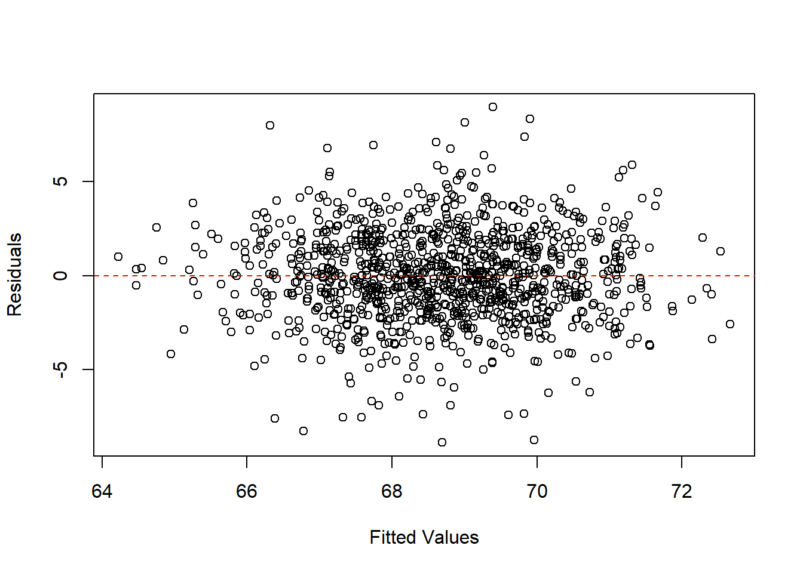
3.6.2 오차항의 등분산성과 독립성
- 잔차는 회귀직선의 모형이 타당하고 오차의 등분산성이 성립된다면, \(X\)에 대해 산점도 또는 \(Y\)에 대해 산점도를 그렸을 때 0을 중심으로 랜덤하게 나타나고, \(X\)축 변수에 따라 어떤 경향도 나타나지 않아야 함
잔차의 특성
- 잔차 \(e_i\)의 합은 0임
\[ \bar{e}=\frac{1}{n}\sum_{i=1}^ne_i=0 \]
- 단순선형회귀모형에서 잔차의 분산
\[ S_e^2=\frac{1}{n-2}\sum_{i=1}^ne_i^2 \]
잔차에 대한 독립성 검정으로 Durbin-Watson 검정을 할 수 있음
통계적 가설
- \(H_0: \rho=0\) (잔차 간의 상관계수는 0이다)
- \(H_1: \rho \ne 0\) (잔차 간의 상관계수는 0이 아니다)
Durbin-Watson 검정통계량
\[ d=\frac{\sum_{i=2}^n(e_i-e_{i-1})^2}{\sum_{i=1}^ne_i^2} \]
검정법
- 만약 \(d<d_L\)이면 \(H_0\)를 기각
- 만약 \(d>d_U\)이면 \(H_0\)를 기각하지 못함
- 만약 \(d_L<d<d_U\)이면 \(H_0\) 기각여부를 결정하지 못함
\(d_L\)과 \(d_U\)는 설명변변수의 개수 \(k\)에 의존하여 결정 됨
\(d\) 값의 범위는 0부터 4사이에 나타나며, 2에 가까울수록 독립에 가까움
3.6.3 오차항의 정규성
오차항의 확률분포가 정규분포에서 많이 벗어나는 경우 정규성을 가정한 가설 검정 등의 추론을 할 수 없음
정규성을 만족해야 정규성 가정하에서의 추론이 유효하므로 오차항에 대한 정규성 검토가 필요함
오차항의 정규성을 그래프적으로 점검하는 방법으로 잔차들에 대해 분위수대분위수 그림(Q-Q plot; Quantile-Quantile plot)을 그려서 판단 할 수 있음
library(UsingR)
fit <- lm(sheight~ fheight, data=father.son)
qqnorm(fit$residual)
qqline(fit$residual)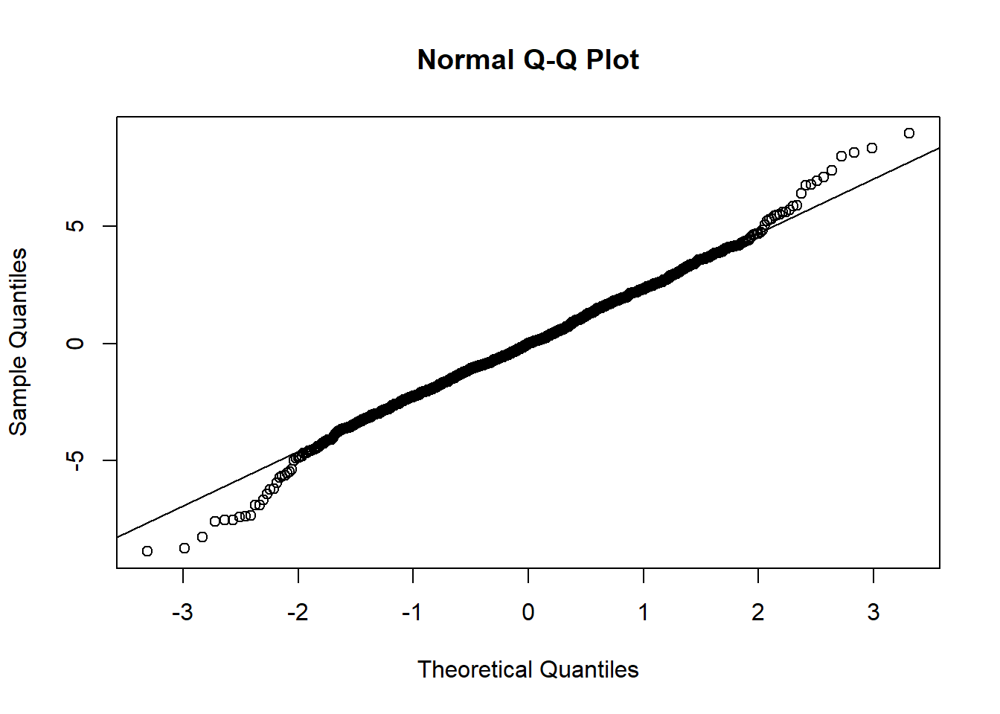
잔차의 정규성에 대한 검정으로 Shapiro-Wilks 검정을 이용할 수 있음
통계적 가설
- \(H_0:\) 관측 데이터는 정규분포를 따른다.
- \(H_1:\) 관측 데이터는 정규분포를 따르지 않는다.
Shapiro-Wilks 검정통계량
\[ W=\frac{(\sum_{i=2}^na_ie_{(i)})^2}{\sum_{i=1}^n (e_i-\bar{e})^2} \]
여기서 \(e_{(i)}\)는 \(\{e_1, \cdots, e_n\}\)를 순서대로 재배열한 잔차 순서통계량
- \(a_i\)는 표본의 크기 \(n\)인 정규분포 표본으로부터의 순서통계량이 고려된 상수들로
\[ (a_1, \cdots, a_n)=\frac{m'V^{-1}}{m'V^{-1}V^{-1}m} \]
여기서 \(m=(m_1, \cdots, m_n)'\), \(m_1,\cdots, m_n\)은 표준정규분포에서 나온 표본에 대한 순서통계량의 기대값, \(V\)는 이러한 순서통계량들의 공분산행렬
3.7 Example
3.7.1 Example 1
- 이변량 데이터 \((x,y)\)를 포함한 벡터 \(x,y\)가 다음과 같다.
x <- c(1.9, 0.8, 1.1, 0.1, -0.1, 4.4, 4.6, 1.6, 5.5, 3.4)
y <- c(0.7, -1.0, -0.2, -1.2, -0.1, 3.4, 0.0, 0.8, 3.7, 2.0)
plot(x,y)
out <- lm(y~x)
abline(out)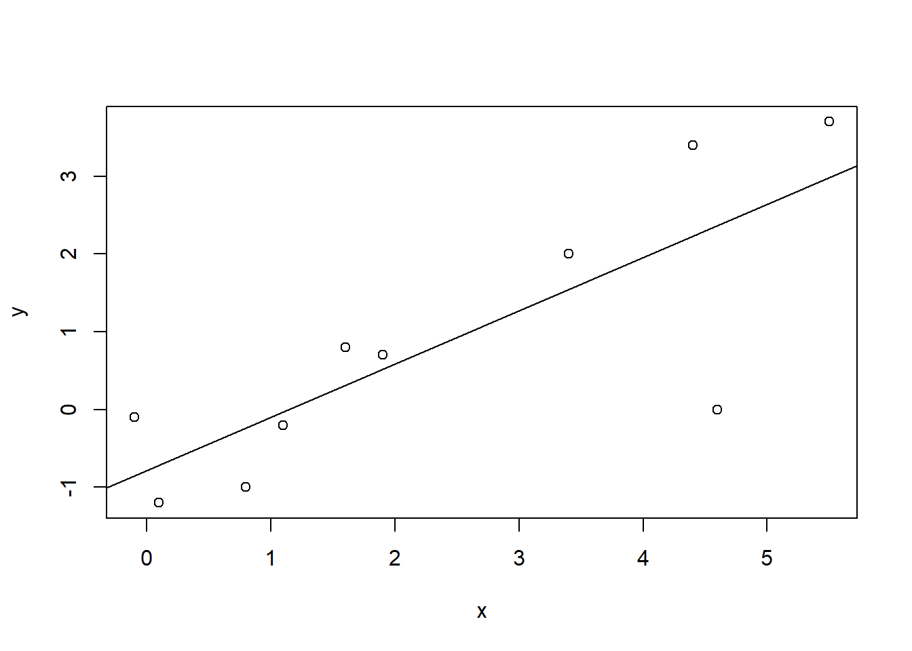
summary(out)##
## Call:
## lm(formula = y ~ x)
##
## Residuals:
## Min 1Q Median 3Q Max
## -2.3651 -0.4036 0.3208 0.6613 1.1720
##
## Coefficients:
## Estimate Std. Error t value Pr(>|t|)
## (Intercept) -0.7861 0.5418 -1.451 0.18485
## x 0.6850 0.1802 3.801 0.00523 **
## ---
## Signif. codes: 0 '***' 0.001 '**' 0.01 '*' 0.05 '.' 0.1 ' ' 1
##
## Residual standard error: 1.083 on 8 degrees of freedom
## Multiple R-squared: 0.6436, Adjusted R-squared: 0.599
## F-statistic: 14.45 on 1 and 8 DF, p-value: 0.005231- 주어진 \(x\)값에서 추정값을 얻고자 할 경우
pred_y <- predict(out, newdata=data.frame(x=x))
cbind(x,pred_y,y)## x pred_y y
## 1 1.9 0.51543194 0.7
## 2 0.8 -0.23811424 -1.0
## 3 1.1 -0.03260165 -0.2
## 4 0.1 -0.71764364 -1.2
## 5 -0.1 -0.85465203 -0.1
## 6 4.4 2.22803692 3.4
## 7 4.6 2.36504531 0.0
## 8 1.6 0.30991935 0.8
## 9 5.5 2.98158310 3.7
## 10 3.4 1.54299493 2.0- 새로운 \(x\) 값 2.3에 대해 반응 예측값을 얻고자 할 경우
pred_y <- predict(out, newdata=data.frame(x=2.3))
pred_y## 1
## 0.7894487- \(x=1, 2.2, 6.7\)에서 각각 반응 추정값을 얻고자 할 경우
pred_y <- predict(out, newdata=data.frame(x=c(1, 2.2, 6.7)))
pred_y## 1 2 3
## -0.1011058 0.7209445 3.80363353.7.2 Example 2
- 책의 부피(설명변수, \(X\))와 무게(반응변수, \(Y\))에 대해 회귀분석을 해보자.
volume <- c(412, 953, 929, 1492, 419, 1010, 595, 1034)
weight <- c(250, 700, 650, 975, 350, 950, 425, 725)
book.lm <- lm(weight ~ volume)
summary(book.lm)##
## Call:
## lm(formula = weight ~ volume)
##
## Residuals:
## Min 1Q Median 3Q Max
## -89.674 -39.888 -25.005 9.066 215.910
##
## Coefficients:
## Estimate Std. Error t value Pr(>|t|)
## (Intercept) 41.3725 97.5588 0.424 0.686293
## volume 0.6859 0.1059 6.475 0.000644 ***
## ---
## Signif. codes: 0 '***' 0.001 '**' 0.01 '*' 0.05 '.' 0.1 ' ' 1
##
## Residual standard error: 102.2 on 6 degrees of freedom
## Multiple R-squared: 0.8748, Adjusted R-squared: 0.8539
## F-statistic: 41.92 on 1 and 6 DF, p-value: 0.0006445plot(book.lm)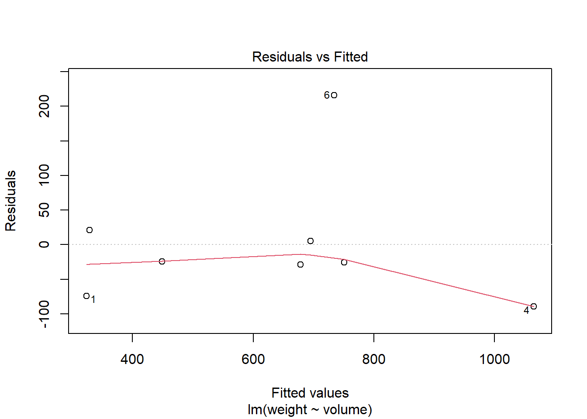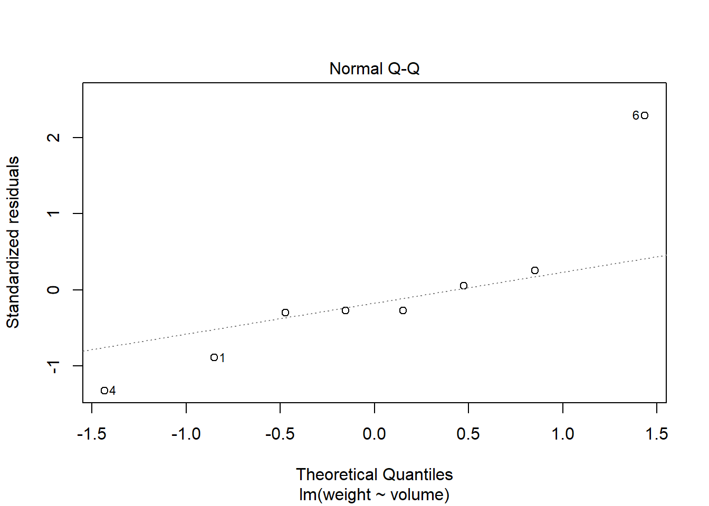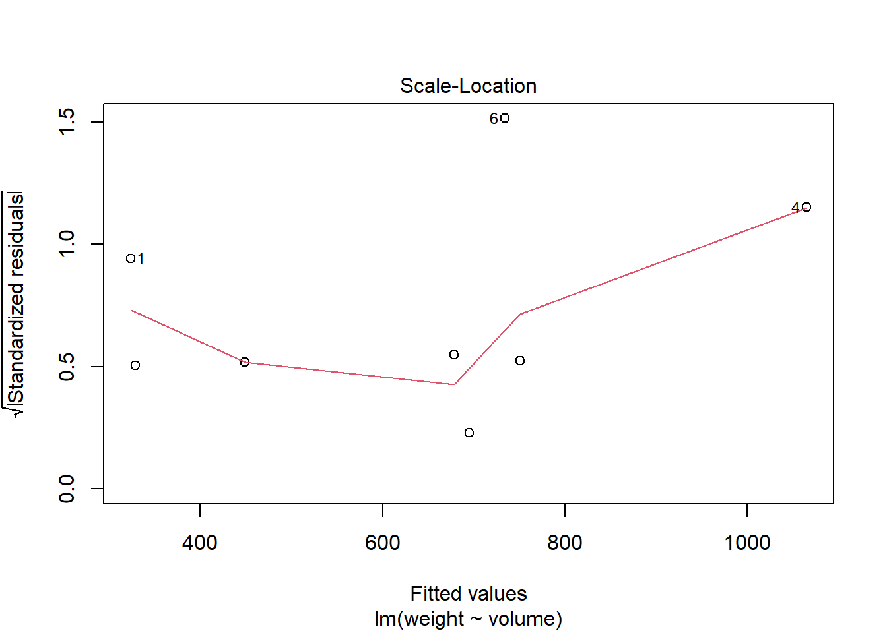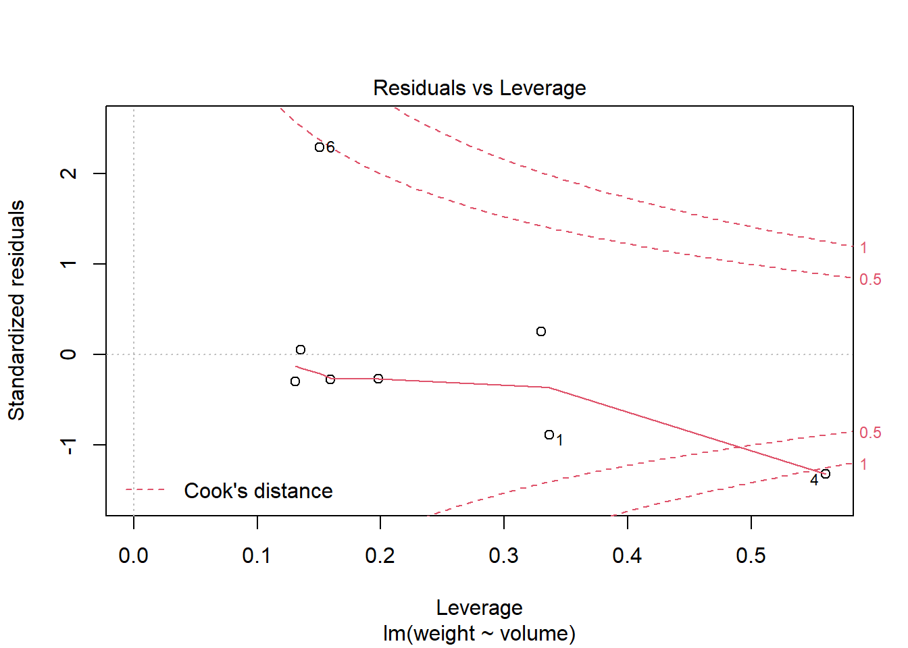
- 단순선형회귀모형 적합 결과, 추정식
\[ \hat{weight}=41.3725+0.6859\times volume \]
\(R^2\)는 0.8748로 추정된 회귀식의 설명력이 높은 편
모형의 타당성에 대한 \(F\) 통계량은 41.92, p-value는 \(0.000644 < 0.05\)로 유의수준 \(5\%\)에서 모형이 유의한 것으로 나타남남
기울기 회귀계수에 대한 유의성 검정으로 \(H_0:\beta_1=0\)에 대해 \(t\) 통계량은 6.475, p-value는 \(0.000644 < 0.05\)로 유의수준 \(5\%\)에서 귀무가설을 기가하게 되므로 추정된 회귀계수는 유의함
attributes(book.lm)## $names
## [1] "coefficients" "residuals" "effects" "rank"
## [5] "fitted.values" "assign" "qr" "df.residual"
## [9] "xlevels" "call" "terms" "model"
##
## $class
## [1] "lm"book.lm$coefficients## (Intercept) volume
## 41.3724757 0.6858592book.lm$residuals## 1 2 3 4 5 6 7 8
## -73.94646 5.00373 -28.53565 -89.67436 21.25253 215.90976 -24.45868 -25.55086book.lm$fitted.values## 1 2 3 4 5 6 7 8
## 323.9465 694.9963 678.5356 1064.6744 328.7475 734.0902 449.4587 750.55093.8 부분 회귀
데이터의 부분에 따라 서로 다른 회귀모형을 적합해야 할 경우가 있음
- 예를 들어, 데이터 집합이 두 개의 부분집합으로 나뉘며 각 부분에서 회귀모형을 적합할 수 있음
여러 개의 부분집합에 대해 선형모형을 적합할 경우는 부분 부분선형모형(piecewise linear model)을 적합할 수 있음
한 개의 설명변수(독립변수) \(X\)와 한 개의 반응변수(종속변수) \(Y\)간의 선형회귀모형
\[ Y=\begin{cases} \beta_0+\beta_1X+\epsilon, \,\,\, X<c\\ \gamma_0+\gamma_1X+\epsilon, \,\,\, X\ge c \end{cases} \]
3.8.1 Example
- A 제조회사에서 전기사용량(\(X\))에 따른 매출액(\(Y\)) 데이터이다. \(Break=22.4\) 이후로 매출액 증가가 달라지므로 부분회귀모형을 적합하고자 한다.
y <- c(362, 357, 111, 703, 494, 410, 63, 616, 468, 973, 235, 180, 69, 305, 106, 155, 422, 44, 1008, 225, 321, 1001, 531, 143, 251, 216, 57, 136, 226, 169, 32, 75, 102, 4, 68, 102, 462, 295, 196, 50, 739, 287, 226, 706, 127, 85, 234, 153, 4, 373, 54, 81)
x <- c(23.5, 22.4, 6.1, 35.9, 35.5, 23.2, 9.1, 27.5, 28.6, 41.3, 16.9, 18.2, 9, 28.6, 12.7, 11.8, 27.9, 21.6, 45.9, 11.4, 16.6, 40.7, 22.4, 17.4, 14.3, 14.6, 6.6, 10.6, 14.3, 3.4, 5.1, 4.1, 4.1, 1.7, 7.5, 7.8, 22.6, 8.6, 7.7, 7.8, 34.7, 15.6, 18.5, 35, 16.5, 11.3, 7.7, 14.8, 2, 12.4, 9.2, 11.8)
data <- data.frame(y,x)
head(data)## y x
## 1 362 23.5
## 2 357 22.4
## 3 111 6.1
## 4 703 35.9
## 5 494 35.5
## 6 410 23.2Break <- 22.4
g1 <- lm(y~x, data=data, subset=(x<Break))
g2 <- lm(y~x, data=data, subset=(x>=Break))
summary(g1)##
## Call:
## lm(formula = y ~ x, data = data, subset = (x < Break))
##
## Residuals:
## Min 1Q Median 3Q Max
## -194.58 -64.23 -15.89 55.98 213.31
##
## Coefficients:
## Estimate Std. Error t value Pr(>|t|)
## (Intercept) 53.368 33.365 1.600 0.11896
## x 8.574 2.803 3.059 0.00431 **
## ---
## Signif. codes: 0 '***' 0.001 '**' 0.01 '*' 0.05 '.' 0.1 ' ' 1
##
## Residual standard error: 84.22 on 34 degrees of freedom
## Multiple R-squared: 0.2159, Adjusted R-squared: 0.1928
## F-statistic: 9.36 on 1 and 34 DF, p-value: 0.004307summary(g2)##
## Call:
## lm(formula = y ~ x, data = data, subset = (x >= Break))
##
## Residuals:
## Min 1Q Median 3Q Max
## -227.885 -40.894 3.498 92.715 165.864
##
## Coefficients:
## Estimate Std. Error t value Pr(>|t|)
## (Intercept) -240.926 128.548 -1.874 0.0819 .
## x 27.056 4.037 6.702 1.01e-05 ***
## ---
## Signif. codes: 0 '***' 0.001 '**' 0.01 '*' 0.05 '.' 0.1 ' ' 1
##
## Residual standard error: 118.7 on 14 degrees of freedom
## Multiple R-squared: 0.7624, Adjusted R-squared: 0.7454
## F-statistic: 44.92 on 1 and 14 DF, p-value: 1.007e-05plot(y~x)
abline(v=Break, lty=5)
segments(min(x), g1$coef[1]+g1$coef[2]*min(x),
Break, g1$coef[1]+g1$coef[2]*Break)
segments(Break, g2$coef[1]+g2$coef[2]*Break,
max(x), g2$coef[1]+g2$coef[2]*max(x))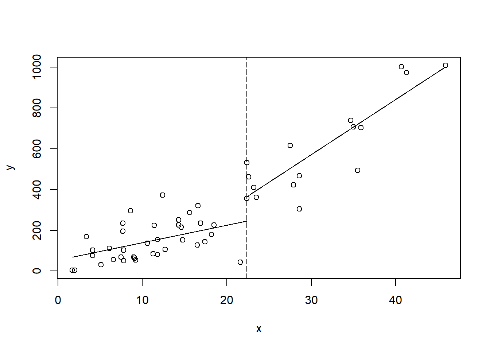
- \(Break=22.4\) 이전과 이후의 회귀식
\[ Y=\begin{cases} 53.670+8.572X, \,\,\, X<22.4\\ -240.926+27.056X, \,\,\, X\ge 22.4 \end{cases} \]